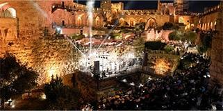

SidraTarbut: A Festival of Summer Culture in Jerusalem
2023-07-30
Back to News from About
2023-07-30

2023-07-16

2023-06-21

2023-06-08

2023-05-03
2023-04-26

2023-02-26

2023-02-02

2022-12-01
2022-11-18

2022-11-17

2022-11-10

2022-11-08

2022-07-28

2022-06-28
2022-06-15

2022-04-28

2022-04-26

2022-04-05

2022-04-04

2022-04-03

2022-03-30

2022-02-08

2021-11-24
2021-11-09

2021-10-17

2021-08-08
2021-08-03

2021-08-01

2021-05-02

2021-04-26
2021-04-15
2021-04-06
2021-03-18

2021-02-24
2020-12-23

2020-12-22
2020-12-08
2020-12-07

2020-10-21
2020-09-04

2020-07-02

2020-06-07

2020-05-26
2020-04-27
2020-04-20
2020-04-07

2020-03-31

2020-03-27

2019-12-01
2019-11-24
2019-11-08

2019-10-25

2019-10-20
2019-10-17

2019-09-23

2019-09-19
2019-09-16
2019-09-15

2019-03-07

2018-04-11

2019-02-07

2017-02-02

2018-11-01

2018-10-29
2018-10-29

2018-10-29

2018-10-16

2018-04-29

2018-03-12

2017-03-14

2018-01-30
2017-10-31
2017-10-30

2017-10-30

2017-09-05

2017-07-03

2017-07-03

2017-06-15

2017-05-15
2017-05-08

2017-03-26
2017-02-20

2017-02-08

2017-02-02

2017-01-31

2016-11-02

2016-10-30

2016-09-06
2016-09-04

2016-08-15

2016-07-10
2016-06-10

2016-06-06
2016-06-01

2016-05-03

2016-04-07

2016-03-24
2016-03-21
2016-03-07
2015-09-02

2015-06-02
2015-05-31

2015-05-30
2015-05-13
2014-12-10
2014-06-11
2013-05-17